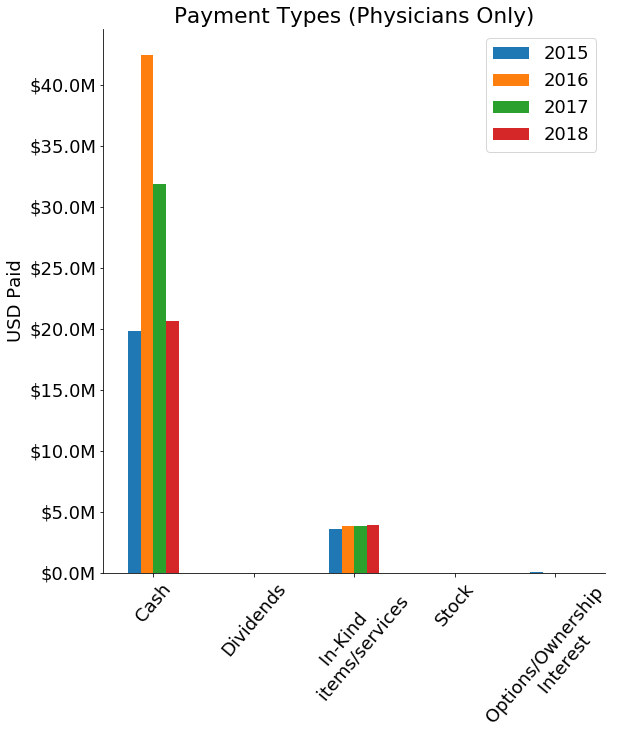
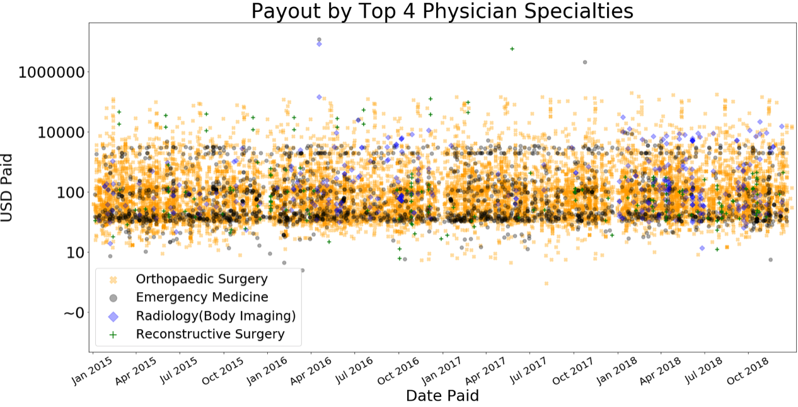

Results
Intro: TODO set up the motivation to read the following plots closely
How do total daily payments vary in Wisconsin 2015-2018?

2015, 2016, and 2017 had a four total daily payments greater than $1.5M. There was one daily payout total for $25M which dwarfs the median payout of $16,580 across the years. 2018 did not have the outragous payouts as the other years. In 2018 most days had total payments for less than $100K, however there appears to be some patern of +$400K payouts every other month.
Corporations are paying a lot of money on a daily basis to teaching hospital and physicans. This means that teaching hospitals and physican's are key steakholders for corporate medical companies. But where is the money actually going and for what reasons? And what is going on with enormous payment dates?
Where is the money going?
Across the four year, Physican's have recieved over 30X compared to teaching hospitals. Physicians have recieved $129,968,000 while teaching hospitals recieved only $3,805,000.
To us, this was mind-blowing. The University of Wisconsin Hospital, Children's Hospital, and Froedtert Hospital are just a few examples of teaching hospitals. These hospitals are enormous and we would have expected corperations to write bigger checks to these institutions. Of course there are far fewer teaching hospitals than physicians, but it we still would hav expected more money to be going to teaching institutions. What are physicians recieving all this money for and how are they recieving it? These are big questions that might make you question the integrity of your own physician and where there incentives are. Sadly.
How are the physician's getting paid?
Cash is king, and physican's are receiving alot of it. 97% of payments to physicans are cash, while only 3% are for in-kind items or services values are notably similar at $4.1M. The cash payouts are not consistent across the years; there is about a $23M difference from 2016 to 2015 and 2018. No physicians have recieved dividends or stocks, and only a sliver of payment in the form of options/ownership interest occured in 2015.
In kind items/services are donations in the form of labor, tools, or services of some kind. Although this is a small amount compared to cash, $4.1M each year is still a lot of money and it would be interesting to know what exactly companies are "donating" to physicians. It is re-assuing that since 2015 not a single physician has recieved dividends, stock, or options/ownerships because they would signal a larger conflict of interest compoared to cash. However, we still have the elephant in the room. Why are physicians reciving massive (cash) payments?
What types of physicians are reciving the most money?

The top four physician specialties have taken home between 33%-56.5% of the total. However, the top categories change year-to-year. Only Orthopediaci Surgery was in the top 4 each year. Female reconstrutive surgery and emergency medicine had suprising dominating appearences in 2017 and 2016 respectivly.
Othopedics involves the muscles and joints which makes sense why this specialty consistently attracts a lot of money from corporations. It is funny to see a massive serge of money going to female reconstructive physicians in Wisconsin after face-lifts, bow-tox, and plastic surgey went mainstream. But what category is the money mainly going towards: drugs, devices, supplies?
What are the payments going to physicians classified as?

Between the four years 51% of all the payments to physicains were classified as "No Value". However, since 2016 there has been an 80% drop in payments classified as "No Value".
TODO: Conclusions from plot [ie: what does this mean? does it pose new questions? Are there any implecations to these findings? This is where you insert your smarticles. Make sure the conclusions are SUPPORTED by the plot. The conclusions CANNOT be too far of a stretch.
TODO

TODO: Quantitative observations about the above plot [ie: the largest categy, B, accounts for 73% of the total]
TODO: Conclusions from plot [ie: what does this mean? does it pose new questions? Are there any implecations to these findings? This is where you insert your smarticles. Make sure the conclusions are SUPPORTED by the plot. The conclusions CANNOT be too far of a stretch.
What are the payments for?
TODO: Quantitative observations about the above plot [ie: the largest categy, B, accounts for 73% of the total]
TODO: Conclusions from plot [ie: what does this mean? does it pose new questions? Are there any implecations to these findings? This is where you insert your smarticles. Make sure the conclusions are SUPPORTED by the plot. The conclusions CANNOT be too far of a stretch.
TODO

TODO: Quantitative observations about the above plot [ie: the largest categy, B, accounts for 73% of the total]
TODO: Conclusions from plot [ie: what does this mean? does it pose new questions? Are there any implecations to these findings? This is where you insert your smarticles. Make sure the conclusions are SUPPORTED by the plot. The conclusions CANNOT be too far of a stretch.
TODO
TODO: Quantitative observations about the above plot [ie: the largest categy, B, accounts for 73% of the total]
TODO: Conclusions from plot [ie: what does this mean? does it pose new questions? Are there any implecations to these findings? This is where you insert your smarticles. Make sure the conclusions are SUPPORTED by the plot. The conclusions CANNOT be too far of a stretch.
TODO
TODO: Quantitative observations about the above plot [ie: the largest categy, B, accounts for 73% of the total]
TODO: Conclusions from plot [ie: what does this mean? does it pose new questions? Are there any implecations to these findings? This is where you insert your smarticles. Make sure the conclusions are SUPPORTED by the plot. The conclusions CANNOT be too far of a stretch.
TODO
TODO: Quantitative observations about the above plot [ie: the largest categy, B, accounts for 73% of the total]
TODO: Conclusions from plot [ie: what does this mean? does it pose new questions? Are there any implecations to these findings? This is where you insert your smarticles. Make sure the conclusions are SUPPORTED by the plot. The conclusions CANNOT be too far of a stretch.